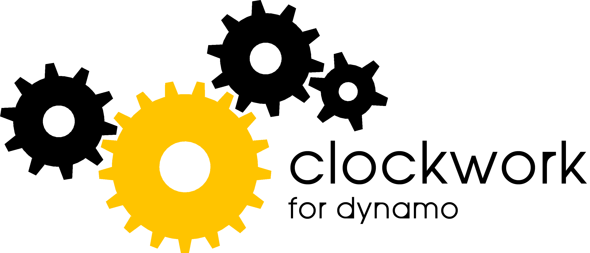

dynamomysql

Clockwork is a collection of custom nodes for the Dynamo visual programming environment. It contains many Revit-related nodes, but also lots of nodes for various other purposes such as list management, mathematical operations, string operations, geometric operations (mainly bounding boxes, meshes, planes, points, surfaces, UVs and vectors) and paneling. Currently it consists of some 330+ nodes of which a large portion was previously published in a number of separate packages. Keeping all those nodes in a single package has made updates and maintenance much easier and has greatly reduced package dependencies. I had never set out to build so many custom nodes – somehow it just happened.
If you like the package, please vote in support of it in Dynamo's package search tool.
Installation is simple - just use Dynamo's built-in package manager and search for Clockwork. If you have used some of my previous 0.6.3 packages, please remember to uninstall all of them (find a complete list here). Also, always make sure you have the correct version of Clockwork installed that corresponds to your installed version of Dynamo.
The different versions are available as separate packages on the package manager. (So far each new major Dynamo version has introduced changes that prevented downward - and sometimes even upward - compatibility of nodes, hence the separate packages...)
During migration from one Dynamo version to the next, I regularly recategorize and rename a lot of nodes. These changes are documented in an excel sheet that contains a list of all nodes within the package. Nodes with pending issues are highlighted in yellow. If you are missing a specific node, please consult the list of deprecated nodes.
Since Dynamo's package manager currently does not (yet) have an update notification infrastructure in place, you may want to follow me on twitter for update notifications.
On this repository you can find a list of known issues and planned enhancements. Should you find that one of the nodes in this package does not work (or could work better with improved functionality), please let me know by creating a new issue in that section. Also, if you happen to come across a built-in node that does exactly the same as one of the Clockwork nodes, please let me know so I can remove that particular node from the package - I am not trying to duplicate existing functionality.
This repository contains the following:
If you're interested in contributing to Clockwork, just submit a pull request. It's not that hard - some folks have already done it.